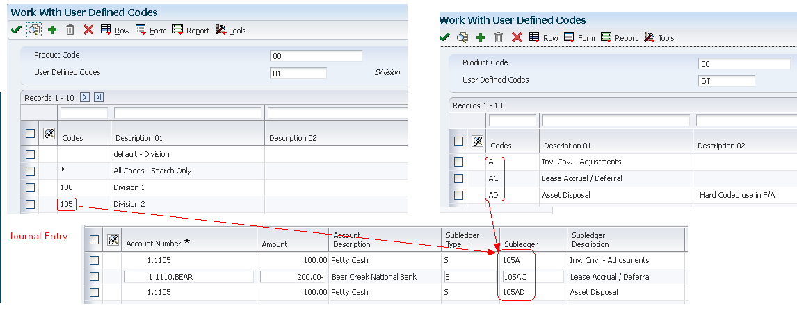

| Purpose |
| Overview |
| Scope |
| Details |
| Assigning Subledger Posting Edit Code (PEC) to an Account |
| Modifying Subledger Posting Edit Code (PEC) |
| Structured (Flex Format) Subledgers |
| Overview |
| Setup Example |
| Error Messages: |
| Additional Subledger Types (X, Y and Z) |
| Inactivating Subledgers |
| Reporting by Subledger |
| Trial Balance by Subledger program (P09215) |
| Account Balance by Subledger program (P092131) |
| G/L with Subledger Totals report (R09422) |
| Differences Between Subledger and Subsidiary Accounting |
| Frequently Asked Questions |
In addition to the business unit.object.subsidiary method of account coding, you can use subledgers to code accounts. Subledgers provide the most detailed record of accounting activity for a business unit. You might use subledger accounting to track:
With subledger accounting, you can:
Subledger Type UDC Codes (00/ST)
You can set up detailed auxiliary accounting within a general ledger account using subledger type codes in UDC table 00/ST. A subledger type code, such as A for address book, is associated with a number, such as an employee number. Subledger type codes also control how the system validates a subledger value when you create a journal entry.
Examples:
Before you can use subledgers, you must decide which subledger types to use. The system verifies the subledger number for each type against a specific master table. The following list describes the predefined, hard-coded subledger types:
| Subledger Type | Master Table |
|---|---|
| A | Validates against the Address Book Master table (F0101). This type is the most commonly used subledger type. Use this type to track expenses that are associated with sales people, employees, and so on. You also use it for the detail method '2' of intercompany settlements. |
| C | Validates against the Business Unit Master table (F0006). |
| E | Validates against the Asset Master File table (F1201). |
| I | Validates against the Item Master table (F4101). |
| J | Validates against the Change Request Master Table (F5301). |
| L | Validates against the Tenant/Lease Master table (F1501). |
| O | Validates against the Sales Order Header File table (F4201). |
| S | Validates against the Chart of Accounts Format table (F0907). This is the structured subledger type. For more information on this, see section below "Structured (Flex Format) Subledgers". |
|
W P |
Validates against the Work Order Master File table (F4801). Validates for Revenue Performance Obligation. A new feature introduced in E1 9.1
|
This document provides an overview of use of Subledgers within General Accounting and discusses how to assign and modify Subledger PEC for an account, Structured (S) and Additional Subledger Types (X, Y and Z), how to inactivate Subledgers, differences between Subledger and Subsidiary Accounting and different options available for Reporting by Subledger.
You assign posting edit codes to define which accounts require subledgers and how amounts are to be posted in Account Ledger (F0911) and Account Balance (F0902) tables. There are four different Posting Edit Codes (PEC) related to subledgers:
| PEC Value | Description | Usage |
|---|---|---|
| Blank | Allows all posting |
|
| L | Subledger and Type required - Detail |
|
| S | Subledger and Type required - Summary |
|
| X | Subledger and Type - Blank |
|
The following diagram shows how information stored in the Account Balances table (F0902) is affected by the posting edit code:
Regardless of the posting edit code (PEC) on account 90.8665, there would be four detail lines stored in the F0911 file for this entry. However, the F0902 may look different based on the PEC as follows:
Whenever possible, avoid changing the Subledger Posting Edit Code on an account as this change requires direct updates to the data within the F0911 and/or F0902 tables using SQL. These type of direct updates to data are not recommended or supported by Oracle Software Support. When it is required to modify the posting edit code on an account, the following are examples of the changes that would be needed:
Blank to 'L'
When changing from a PEC of Blank to 'L' for an account having existing transactions, it will be required to update existing data using SQL since records with PEC Blank may or may not have subledgers but subledger is required for PEC 'L':
Blank to 'S'
When changing from a PEC of Blank to 'S' for an account having existing transactions, it will be required to update existing data using SQL since records with PEC Blank may or may not have subledgers but subledger is required for PEC 'S':
'L' to Blank
When changing from a PEC of 'L' to Blank, no data changes are necessary.
'S' to Blank
When changing from a PEC of 'S' to Blank, no data changes are necessary.
'L' to 'S'
'S' to 'L'
Structured Subledgers allows the subledger value to validate against a particular or combination of multiple User Defined Codes (UDC's). The Structured Subledger can be made up of multiple sequences (code types). You could edit against UDC table for different combinations of System Code and Product Code. For example:
You can setup multiple sequences, but the maximum length of all segments combined is 8 characters. If you exceed 8 characters you will receive the following error: Total Element Length Invalid.
Following steps demonstrate an example to set up and use structured subledgers:

Enter Transactions Using Structured Subledger
While entering transactions using Flex Subledger Format, the Subledger Type is always required to enter as 'S' for Structured Subledger.

The Subledger Type 'S' designates that the subledger is structured and instructs the program to edit the subledger value against the UDC table designated in the Subledger Flex Format.
If a composite subledger value does not validate with the UDC table setup in the Subledger Flex Format, you will receive the following error:
Subledger Element X in Error, where X is the Sequence number.
This error is thrown since the portion of the subledger field corrosponding to element X of the structured account format is invalid.
In above example,
In addition to the predefined subledger types, you can define three subledger types (X, Y, and Z) which are used for subledger values that do not edit against a master table. These subledger types and their formats are defined in User Defined Code (UDC) 00/ST. Since these subledger types are not validated against any EnterpriseOne tables, you should define them only if you want the system to validate values against a format requirement rather than a specific value. The first character of the Description 02 field controls the format that the system validates against the subledger type. Values are:

Subledger Types X, Y and Z will accept any value in the subledger field as long as the format is valid and the value does not exceed eight characters. For example, if Subledger Type X is defined in UDC 00/ST with Description 2 set to 'A' - any alphanumeric value of eight characters or less would be accepted in the subledger field and the subledger type would be 'X'.

You might need to make a subledger inactive. For example:
To inactivate a subledger, access its corresponding master form. For example:
Both the subledger number and subledger type for a G/L account provides detailed accounting activity. The subledger number becomes the audit trail for the posted subledger transactions. You can use following programs to review information by subledger:
This program displays account balance information by subledger. Use the T/B by Subledger program (P09215) to review account balances for one subledger or all subledgers. You can review balances for one ledger type only.
Use the Account Balance by Subledger program (P092131) to review account balance information by subledger and subledger type for a particular account. This program displays posted amounts and balances for the current period and year to date from the F0902 table. It does not have any processing options.
Use R09422 report to review transaction totals by subledger. This report includes the same information that you can view online with the T/B by Subledger program (P09215).
Subledgers and subsidiary accounting both provide detailed accounting activity. Following table outlines certain key differences between the two:
| Subledger | Subsidiary |
|---|---|
| Subledgers are linked to your business unit.object account or business unit.object.subsidiary account. | Subsidiary accounts are a subdivision of your object account. |
| Subledgers give accounting detail without adding accounts to your chart of accounts. For this reason, subledgers are often used for transaction classifications that are not a permanent part of your chart of accounts, such as detailed travel expenses for account representatives. | Subsidiary accounts are permanent. If you want to track revenues and expenses by account representative using subsidiary accounting, you must create a subsidiary account for each account representative and attach it to each appropriate object account for revenues and expenses. This could mean adding several hundred accounts to your chart of accounts. |
| Subledgers do not create additional records in the Account Master table (F0901). The F0901 table contains only the account, not the subledger. | The F0901 table contains a subsidiary account for each account representative. |
| When you use subledgers to track expenses for account representatives, the system creates a record with a unique subledger for each account in the Account Ledger table (F0911). | When you use subsidiaries to track expenses for account representatives, the system creates a record with a blank subledger for each account in the F0911 table. |
| Subledgers can create additional records in the Account Balances table (F0902), depending on the posting edit code (PEC) that you assign to the account. | The F0902 table will always have a separate record for each subsidiary account. |
Question: A user needs to assign a business unit subledger value that is outside the user's normal business unit range permitted in the inclusive row security for the MCU Business Unit Data Dictionary item. When the user clicks on the visual assist for the subledger field, why does the user not see the object to select this business unit subledger value?
Answer: The user must have at least view access to the business unit in inclusive row security in order for the user to assign this business unit subledger value. It is not possible to enter a Business Unit subledger value that the user does not have at least view only access to within the inclusive row security.